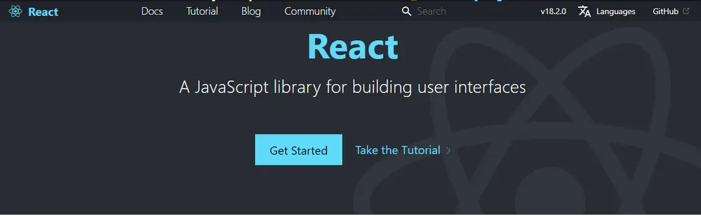
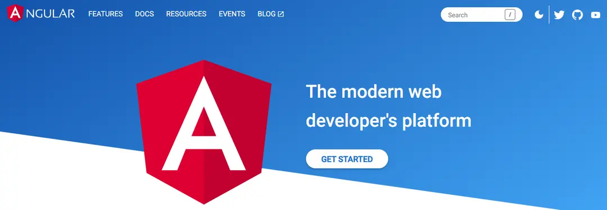
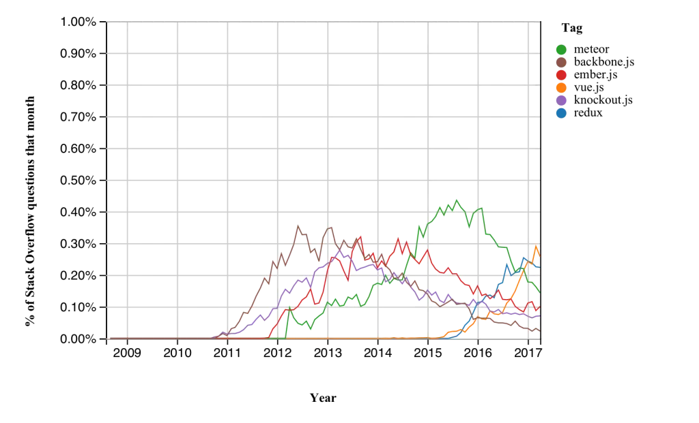

The importance of digitization and online operations has grown immensly. Front-end technologies like Frontend Frameworks have pushed the development of all software applications, and they have picked up steam. Furthermore, backend technologies are equally important, but the frontend is the basic output that users will encounter and appreciate first. The front end is what users will encounter and experience first. In this blog we'll be having a look at the top frontend frameworks in action today and are used by maximum websites and web applications.
What are Frontend Frameworks?
A framework is a bit of software that facilitates the development and maintenance of large projects. Frameworks are collections of fundamental software modules that include prepared code that programmers could use to fix common programming tasks like handling AJAX requests or trying to define a file structure. They also specify the rules for developing the app architecture: you have a skeletal structure that must be extended and changed in accordance with the requirements. Check out the best Full Stack Developer certification for more details.
Utility programs, code libraries, scripting languages, and other software that facilitates the development and implementation of multiple components of a large software product are examples of frameworks. With frameworks, developers don't have to start projects from scratch, but instead have a foundation for implementing other project-specific features.
The graphical user interface of a website or application is referred to as the frontend in web development. In other words, it is the part of the application that visitors could see and engage with. This section must be user-friendly in order to effectively impart knowledge from the server side. As a result, front-end frameworks are software product/tool/platform that serves as the foundation for the advancement of frontend components of web solutions. You can go for Frontend web developer course if you want to learn more about the frontend frameworks.
List of 3 Best Front end Frameworks
The best 3 frontend frameworks in the field of web development are -
React
React, also known as ReactJS, is a well-known front-end JavaScript library for developing user interfaces and related components. It employs the MVC architecture, with a different table of presentation and data availability. One of its distinguishing features is the Virtual DOM and how it handles document access and manipulation. The DOM interacts well with HTML and XML documents, causing them to behave similarly to a tree structure, and each HTML element functions as an object.
React, which is powered by Facebook, has been recognised as a fantastic library in the front-end family of tools. It uses the JSX coding style, with a mix of HTML quotes and tag syntax to create the components. It breaks down larger components into smaller ones that can be managed separately and individually. With this feature, developers' overall productivity is bound to rise.
Pros:
- Component reusability facilitates collaboration and reuse in other parts of the application.
- Through the use of virtual DOM, you can achieve consistent and seamless performance.
- It is the ultimate solution to writing components in React hooks because it allows you to write components without classes and makes learning React easier.
Cons:
- React dev tools are advanced and extremely useful.
- Due to this frontend framework's multiple and constant updates, it is hard to create proper documentation, which has an effect on the learning curve for beginners.
- When starting out with the framework, developers find it difficult to understand the complexities of JSX.
- It only provides solutions for the front end.
Used by:
Netflix, PayPal, Uber, Groupon, Microsoft, Walmart, Facebook, eBay, LinkedIn, Google, etc.
Angular
Angular is a best frontend framework that is dominating the list of web frontend frameworks. It is a framework for creating efficient and advanced single-page applications. It is a Typescript-based development platform developed by Google. Angular is a component-based framework for developing scalable web applications, as well as a set of tools for developers to use to create, build, test, and modify code, and a collection of well-integrated libraries.
Angular allows you to scale single-page applications to enterprise-level applications based on your needs. It is currently used by YouTube and Google Translate. It also has a lot of features, making it one of the most popular frameworks.
Pros:
- There is built-in functionality to upgrade adjustments done in the model to the view and vice versa.
- Decreases the amount of code because most important features, such as two-way data binding, are provided by default.
- By defining them as external elements, the components are decoupled from their dependencies.
- Components are reusable and simple to manage when using dependency injection.
- A large learning and support community.
Cons:
- Because Angular is a complete dynamic solution, there are numerous ways to accomplish the work, and therefore learning curve is steeper.
- Forbes, Xbox, Blender, Gmail, Upwork, PayPal, Microsoft Office, Deutsche Bank, Santander, etc.
Vue.js
Vue.js is a modern, progressive MVVM framework that takes advantage of incremental adoption to the greatest extent possible. Vue.js, as one of the best JavaScript libraries, has been creating interactive UI elements that are lightweight and easy to adapt. It provides data-reactive elements through a flexible and straightforward API. It is simple to complete smaller projects and then scale up to larger ones.
Vue.js is small in size and thus simple to install and download. Small and large level templates can be created, and errors can be identified quickly, saving time and effort. It simplifies the binding of existing applications and provides extensive documentation. It also assists developers in understanding peer frontend frameworks such as Angular.js, React.js, and others. Its MVVM architecture makes it easier to handle HTML blocks.
Pros:
- Tiny and fast
- Friendly to beginners
- Detailed documentation
- Simple syntax
- Two-way data binding
- Has a positive effect on SEO
Cons:
- Language barriers and a lack of plugins.
- It is relatively new and was created by private individuals.
- A small developer community.
- Applicability to larger projects is limited.
- It does not have a powerful business behind it.
Used by:
Netflix, Facebook, Grammarly, Trivago, GitLab, Xiaomi, Adobe, Alibaba, Reuters, Nintendo, etc.
Benefits of Frontend Framework
User-driven outcomes result from rapid development
It is possible to accelerate the development of numerous site elements with the help of the current framework. Similarly, it reduces the amount of time required for development.
For example, the frontend part of the app must be developed concurrently with the backend, and once the latter is complete, the frontend space will explode in a matter of days.
Features and applications are more responsive
The most recent front-end framework enables web developers to create apps with quick-response features. They are adaptable and quick in their construction, allowing the app to respond quickly with a tap and function in that manner.
Real-time programming is provided
The developers are the ones who benefit the most from front-end website development. A web developer can achieve everything, from detecting all changes in the browser to not being afraid of losing the position of the web application as well as the recurrence of loading the web browser pages.
Technology with numerous advantages
One of the key advantages of a front-end web development framework is that it is supported by technology that is simple to scale, learn, and apply.
These technologies have undergone numerous detailed repetitions, and as a result, they provide user-friendly experiences in layer construction. It is simple to learn and apply not only for commercial properties but also for developers.
Types of Solutions You Can Create with Frontend Frameworks
As discussed the large number of existing frontend frameworks, it is straightforward that they will be used to develop vastly different solutions in terms of scale and purpose.
Frontend development frameworks, in a nutshell, are used to create solutions that open in a browser, such as websites, web applications, web services, or mobile apps
The Problem of Plenty
It's difficult to say which of the frameworks provided is the best in 2023 because each has strengths and weaknesses, not to mention multiple complexities and frequently released updates bringing new features to the table. Of course, we cannot cover every possible solution; there are many excellent frontend frameworks that have been left out of this article.
Frequently Asked Questions(FAQs)
-
What are front end frameworks?
A front end framework is a development platform for your front end. It usually includes a method for building your files, associating data with DOM elements, styling your components, and making AJAX requests.
-
Which framework is best for front end?
There is no such thing as a one-size-fits-all frontend development framework. Many frameworks are excellent tools that can be tailored to a specific project. According to the number of developers who use them, the most popular frameworks are React, Vue, Angular, and jQuery.
-
Which framework is best for web development in 2023?
In 2023, the most popular front-end development frameworks will be determined by factors such as usage by company size and salary range, awareness, ease of use, show of interest, and reach. React, Vue.js, jQuery, Ember.js, Backbone.js, Semantic-UI, and Angular are among the top frontend frameworks in 2023.